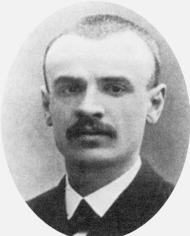

1874–1932
French
Topology, real analysis
René-Louis Baire was born in Paris to a working-class family. His exceptional mathematical talent earned him a place at the École Normale Supérieure, where he studied from 1892 to 1895. His 1899 doctoral thesis, Sur les fonctions de variables réelles, introduced the category theorem and the Baire classification of functions — two ideas that reshaped the foundations of analysis.
The Baire category theorem states that a complete metric space cannot be written as a countable union of nowhere-dense sets. The statement sounds purely topological, but its consequences are profoundly analytic. It is the engine behind the uniform boundedness principle (Banach–Steinhaus), the open mapping theorem, and the closed graph theorem — the three pillars of functional analysis. All three are proved in this course, and all three rest on Baire's single theorem from 1899.
Despite the depth of his contributions, Baire's career was plagued by poor health and depression. He held positions at Montpellier and Dijon but was frequently unable to teach. He spent long periods in sanatoria and eventually retired early. His mathematical output, concentrated in the years around his thesis, was relatively small in volume but enormous in influence.
Baire's classification of functions into classes (continuous, pointwise limits of continuous, and so on) opened the door to descriptive set theory, which became a major branch of 20th-century mathematics. He died in Chambéry in 1932, largely forgotten by the mathematical community, though his theorem had already become indispensable.
| Phase | Page | Referenced for |
|---|---|---|
| Phase 9 | Baire Category and Arzelà–Ascoli | Statement and proof of the Baire category theorem |
| Phase 9 | Baire Category and Arzelà–Ascoli | Historical context: proved in 1899 doctoral thesis |
| Phase 9 | Baire Category and Arzelà–Ascoli | Application: generic continuous functions are nowhere differentiable |
| Phase 9 | Baire Category and Arzelà–Ascoli | Break-box: failure without completeness |
| Phase 14 | Banach Spaces | Baire category and fixed-point theorems require completeness |
| Phase 14 | The Uniform Boundedness Principle | Proof of Banach–Steinhaus via Baire's category theorem |
| Phase 14 | The Uniform Boundedness Principle | Baire category sense: divergence on a comeagre set |
| Phase 14 | The Uniform Boundedness Principle | Historical: Banach–Steinhaus rests on Baire (1899) |
| Phase 14 | The Open Mapping and Closed Graph Theorems | Baire applied to prove the open mapping theorem |
| Phase 14 | The Open Mapping and Closed Graph Theorems | All three fundamental theorems rest on Baire (1899) |
| Phase 14 | The Hahn-Banach Theorem | Contrast: Hahn–Banach uses Zorn, not Baire |
| Phase 14 | Best Approximation in Hilbert Spaces | Baire-powered theorems (Banach–Steinhaus, open mapping) |